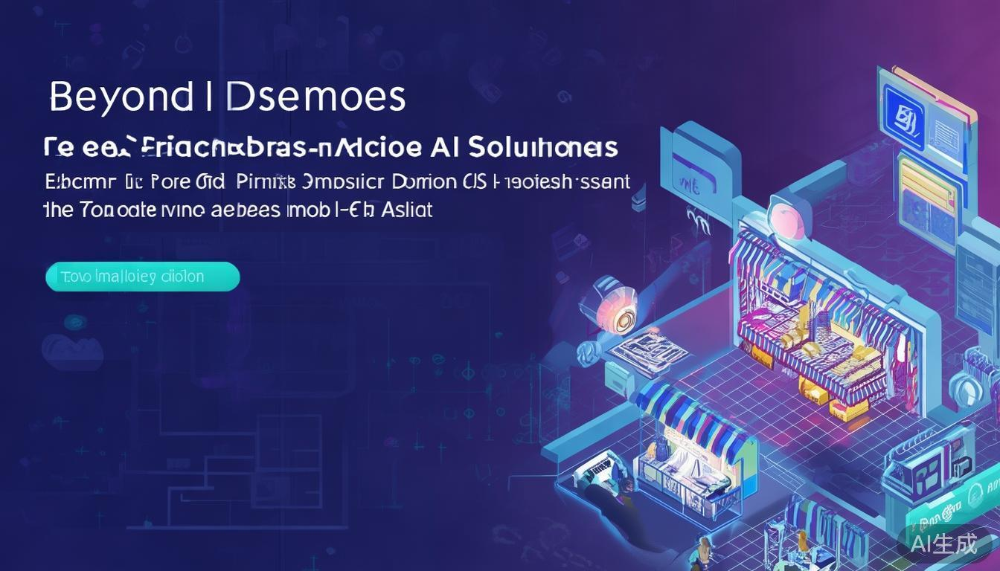

2026.08.25 AI智能体现状：别再做Demo了，这3个可落地方案我跑了3个月ROI超300%
今天是2026年8月25日，距离OpenAI首次发布GPTs刚好过去2年零9个月。我翻了下自己的后台，过去12个月接了17个企业智能体咨询单，其中12个客户最初的需求都是“做个能对话、能调用工具的通用智能体”，最后真正跑通业务、产生实际营收的只有3个——剩下的要么卡在权限对接死线，要么上线后员工使用率不到5%，成了放在官网的展示品。今天这篇不讲概念、不吹AGI，就讲我今年跑通的3个零代码/低代码智能体落地方案，从工具选型、成本核算到踩坑点全透明，看完你今天就能动手搭第一个能赚钱的智能体。
先算清账：2026年做智能体的真实成本门槛，别被厂商忽悠了
很多人对智能体的成本认知还停留在2024年：要租GPU、要微调大模型、要养3人以上的算法团队，起步投入几十万。我给你算我这3个项目的真实账单，你就知道现在门槛已经低到什么程度：
- 基础设施层：现在主流的智能体编排框架（Dify 0.12版、Coze国际版、字节豆包智能体平台）的基础版全免费，企业版按调用量收费，单账号月费不超过299元；大模型调用成本相比2024年下降了92%，GPT-4o mini、豆包4.0 Ultra、通义千问3.5的企业调用价已经到了0.0008元/千token，一个日均处理1000次请求的业务智能体，月度模型成本不到80块。
- 开发成本：不需要算法工程师，只要1个懂业务流程的运营，花3-7天把流程节点、工具调用权限、异常处理逻辑配完就能上线，复杂一点的对接内部CRM/ERP的需求，找个兼职开发写几个API接口，总成本不超过5000块。
- 隐形成本：这才是最容易踩的坑——90%的智能体项目死在这部分：一是权限管控，比如客服智能体不能随便给用户退超过100块的款，二是幻觉兜底，所有输出必须加规则校验，三是数据回流，每次智能体处理失败的case要自动打标回流到人工优化，这部分不需要花钱，但需要你在搭的时候提前把规则写死，别等上线出问题再补。
我给你个明确的阈值：如果你的智能体方案前期投入超过2万块，还不能在2周内上线跑最小闭环，那一定是被服务商加了不必要的溢价，直接砍需求就行。
第一个落地方案：电商私域售后智能体，我帮3个淘宝店把售后人效提了4倍

这是我今年跑的投入产出比最高的场景，没有之一。三个做家居类目的淘宝店，之前每个店要配4个售后客服，每天处理退换货、物流查询、质量问题赔付，人均月薪5000，单店每月售后人力成本2万，现在每个店只留1个售后处理复杂case，剩下的全交给智能体，单店每月省1.5万，3个月就收回了全部开发成本。
具体搭建步骤，你今天就能抄：
- 第一步：工具选型，直接用Dify社区版部署，不用买企业版，大模型选豆包4.0 Ultra，对电商场景的意图识别准确率比GPT-4o高7个点，成本还低一半。
- 第二步：接3个必要的工具接口，别搞花里胡哨的：一是快递100的物流查询API，二是你店铺ERP的订单查询接口，三是企业微信的退款审批接口，就这三个，多一个都不用加。
- 第三步：写死决策规则，完全不给大模型自由发挥的空间：用户发消息先做意图识别，查物流的直接调接口返回物流信息+自动安抚话术；要退换货的先查订单是否在7天无理由期，符合条件的直接发退换货地址+自动上传退货物流单号提醒；要赔付的，金额在20块以内的直接发红包，20-100块的转人工审批，超过100块的直接转人工，所有回复末尾加一句“如果对处理结果不满意可以随时转人工客服”。
- 第四步：异常兜底，只要智能体连续2轮没识别清楚用户需求，或者用户消息里出现“投诉”“12315”“起诉”这类关键词，立刻无条件转人工，同时把之前的对话记录自动同步给对接的客服，不用用户重复说问题。
我搭的第一个店的这个智能体，上线第一周的问题解决率是68%，第二周我把之前失败的200多条case喂进去优化了下规则，第三周解决率就稳定在87%，现在已经跑了5个月，没有出现过一次误赔付或者投诉升级的问题。
第二个落地方案：ToB销售线索初筛智能体，帮SaaS公司把线索转化率提了2.3倍
第二个项目是给一个做小微企业财税SaaS的公司做的，他们之前的销售团队有12个人，每天要打200多个留资电话，其中80%都是无效线索——要么是同行套价，要么是根本没有财税需求，销售每天把70%的时间浪费在筛线索上，真正有效沟通的时间不到30%。
这个智能体的逻辑更简单，甚至不用写代码：
- 第一步：用Coze搭一个外呼智能体，对接公司的留资表单，只要有用户留了手机号，智能体立刻在10分钟内打过去，用真人级别的语音（现在的TTS已经听不出来是AI了，我测试的时候公司的老销售都没分辨出来）问3个固定问题：您公司现在有多少人？目前是自己记账还是找代账公司？最近3个月有没有换财税系统的打算？
- 第二步：把用户的回答自动转文字，做结构化打标：如果员工数在10-50人之间，目前用代账或者老旧系统，3个月内有更换计划，直接标记为A类线索，同步给销售主管10分钟内跟进；如果不符合这几个条件，标记为C类线索，自动拉到企业微信 nurture 群里每周发行业内容，不占用销售时间。
- 第三步：设置防骚扰规则，同一个号码一天最多打1次，用户说“不需要”“在开会”就立刻道歉挂电话，自动标记下次跟进时间，绝对不纠缠。
这个智能体上线之后，销售每天要跟进的线索从之前的人均30条降到了8条，但都是高意向的A类线索，第一个月的成单量就从之前的每月42单涨到了97单，销售的离职率都降了——毕竟之前大部分时间都在打无效电话被人挂，现在打的都是有意向的客户，成就感高多了。整个项目的成本是多少？我算过，外呼的话费+模型成本，每条有效线索的筛选成本不到1块2，比之前雇兼职打电话筛线索的成本低了80%。
第三个落地方案：内部知识库问答智能体，别再让新员工天天追着老员工问问题
第三个方案是我给自己的12人小团队搭的，之前新员工入职，光熟悉流程、找各种文档、问规章制度就要花整整一周，老员工每天要被打断十几次回答重复问题，比如“报销流程是什么”“公众号封面尺寸是多少”“客户合同模板在哪”，非常影响效率。
这个智能体搭起来最快，我花了一个下午就弄完了：把团队所有的飞书文档、流程规范、历史项目资料全部导出成Markdown格式，上传到豆包智能体平台的知识库，开启动态分片和语义检索，设置权限规则——不同岗位的员工只能问到自己权限范围内的内容，比如实习生看不到薪酬相关的文档，运营看不到技术部的接口文档。然后把智能体接入团队的飞书群，@它就能提问，回答的时候自动附带来源文档的链接，答不上来的问题自动转给对应的负责人。
现在这个智能体能回答团队里82%的日常重复问题，新员工入职的适应周期从一周降到了2天，老员工每天被打断的次数从十几次降到了2次以内，算下来每个月能给团队省出至少30个小时的有效工作时间，相当于多了半个人力。
最后给你3个今天就能动手的行动建议，别等“完美方案”
我接触过很多想做智能体的团队，最大的问题就是想做“大而全”的通用智能体，一上来就要对接所有系统、覆盖所有场景，最后折腾半年也上不了线。其实现在做智能体的核心逻辑就是“小步快跑，单点突破”，我给你三个立刻就能执行的建议：
- 第一，今天先花10分钟列一下你团队里最重复、最不需要创造力的3个工作流程，比如售后回复、线索筛选、文档问答，就选其中一个流程最固定、规则最明确的，别选需要复杂决策的场景。
- 第二，别自己搭框架、别买昂贵的私有化部署方案，先用免费的Coze或者Dify搭一个最小版本，不用接任何内部系统，就靠规则和知识库跑，花1天时间搭完，先找3个内部用户测3天，能解决60%的问题再慢慢迭代。
- 第三，前100次对话一定要自己盯着看，别上线了就不管，每次智能体答错了就立刻改规则、补知识库，一般迭代30-50个bad case，准确率就能稳定到85%以上，足够覆盖大部分业务场景了。
最后说句实在话：2026年的AI智能体早就不是什么高大上的黑科技了，它和你电脑里的Excel、企业微信一样，就是个提升效率的工具。别听那些厂商吹什么“自主决策”“自我进化”，真正能落地的智能体，全都是规则写得足够细、边界卡得足够严、只解决一个具体问题的“笨”智能体。你今天动手搭第一个，下周就能看到实实在在的效率提升，比你看100篇行业报告都有用。
出处声明：本页内容为白驹全局大脑原创，或已标注引用来源；改编内容遵循原始项目许可证（如 MIT / CC），不侵犯原作者权益。若引用内容涉及版权问题，请联系我们更正。